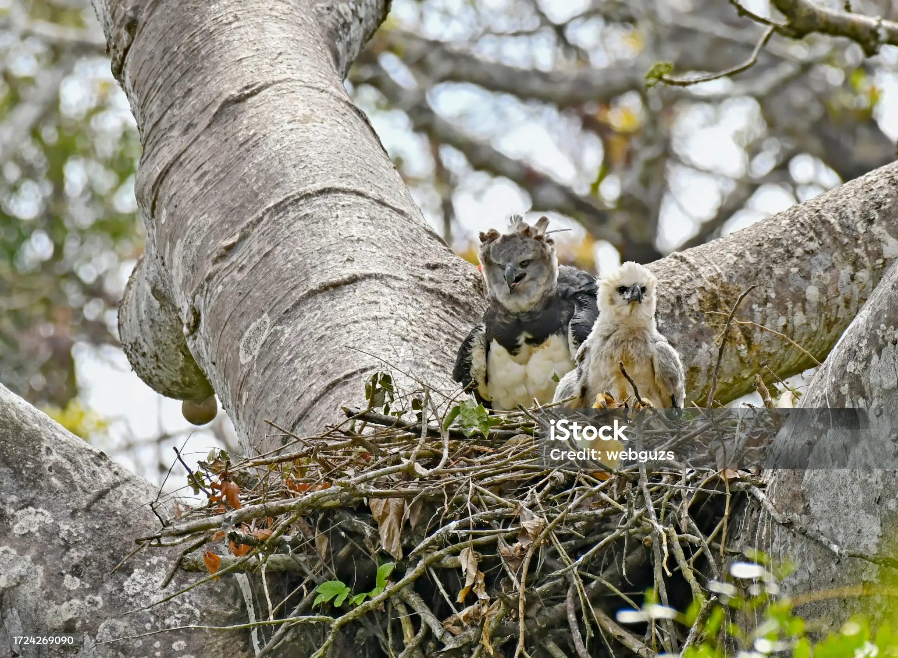

The Harpy Eagle (Harpia harpyja) is one of the largest and most powerful raptors in the world. It is native to the tropical rainforests of Central and South America and is known for its striking appearance and incredible hunting abilities.
Here’s a great image of the Harpy Eagle with its offspring. It builds massive nests high in tall trees, often using branches and leaves. Harpy Eagles typically lay one or two eggs, but only one chick is raised, as the stronger chick outcompetes the other. Both parents take turns hunting and feeding the chick, bringing food such as monkeys and sloths. The young eagle stays dependent on its parents for up to two years, learning to hunt before becoming fully independent. :
